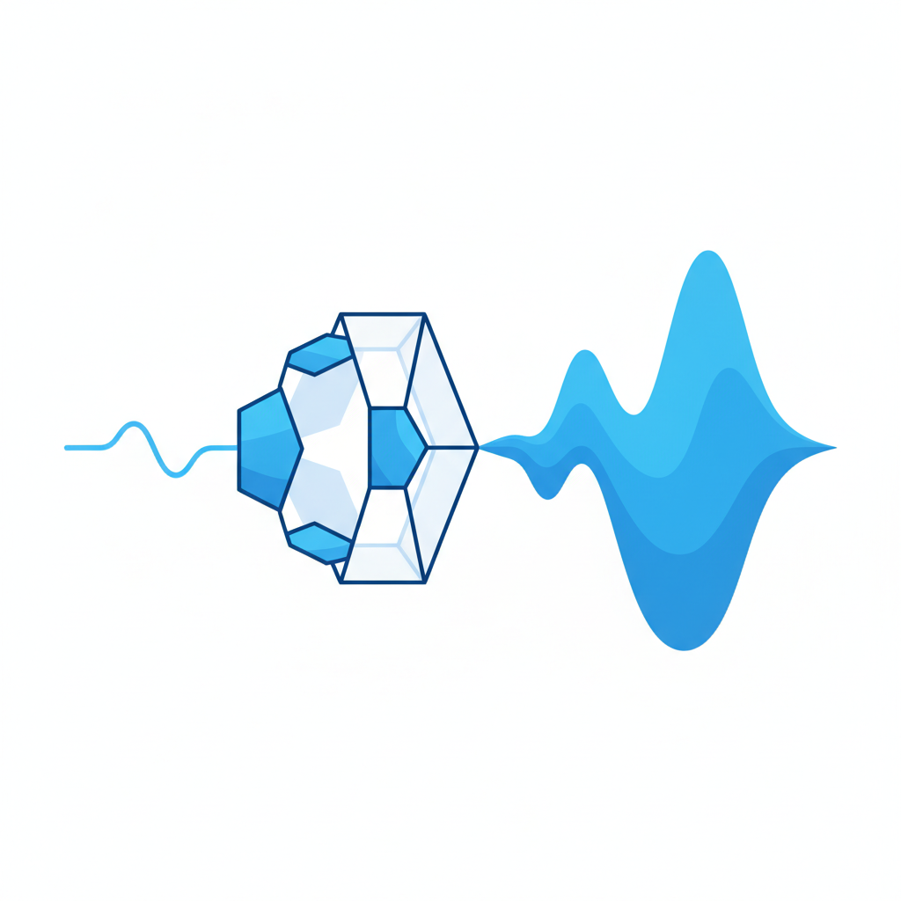

同一个入口，两个出口
2023年秋天，哈佛商学院和沃顿商学院的研究者做了一个精心设计的实验。他们说服了波士顿咨询公司，让758名真正在职的咨询顾问参加一场随机对照测试：一部分人用GPT-4完成一系列咨询任务，另一部分人不用。
结果的第一层很漂亮，漂亮到可以直接写进AI公司的宣传册。使用AI的顾问平均多完成了12.2%的任务，速度快了25.1%，产出质量高了40%。更让人振奋的是：在AI能力范围内的任务上，原本表现最差的那批顾问提升了43%——几乎追上了顶尖同事的水平。
如果故事到这里就结束了，那它就是又一篇"AI让所有人变得更好"的标准叙事。但研究者设计了一个陷阱。他们在任务中混入了一类"边界外任务"——看起来跟其他任务很像，但实际上超出了GPT-4的可靠处理范围。在这些任务上，不用AI的顾问表现正常。而使用AI的顾问，准确率反而低了19个百分点。
研究者发现了两种截然不同的使用模式。一种他们叫"半人马模式"：顾问把任务拆开，有些交给AI，有些自己做，在两者之间灵活切换。另一种可以叫"全托模式"：顾问把整个任务丢给AI，然后在AI输出上做微调。
用半人马模式的人，几乎都是本来就表现好的顾问。他们知道哪些地方AI靠得住，哪些地方靠不住。用全托模式的人，更多是本来表现一般的顾问。他们确实从AI那里获得了巨大的提升——但在AI翻车的地方，他们也一起翻了，而且翻得比不用AI的人还重。
这个实验最有穿透力的发现不是"AI让谁提升更多"，而是一件更微妙的事：判断AI的边界在哪里，这件事本身就需要你已经具备不用AI也能判断的能力。你需要先知道正确答案大概长什么样，才能判断AI给你的答案靠不靠谱。你需要先对问题有自己的框架，才能在AI输出一堆看起来合理的文字时发现其中的漏洞。
这跟我那个医生朋友看到的是同一件事。那个患者不是不会打字，不是没有ChatGPT，不是付不起20美元的订阅费。他缺少的是进入对话之前就需要拥有的东西——对问题本身的理解。
提问是一种需要训练的能力
有一种很常见的误解，认为"问对问题"是一种技巧——学一些prompt模板，记几个格式，效果就能上来。过去两年互联网上最不缺的就是"10个让ChatGPT效率翻倍的prompt"这类教程。但如果你仔细看那个BCG实验和类似的研究，你会发现prompt质量的差异不在于格式，而在于三样更深层的东西。
第一是问题定义能力。一个好的prompt，前提是你知道你面对的是什么问题。我那个医生朋友能写出"45岁男性，干咳三周，无发热，胸部CT示磨玻璃影，CEA轻度升高"，不是因为他读了prompt工程手册，而是因为他在呼吸科干了十五年。他给AI的不是一个问题，是一个已经被专业训练框定过的问题空间。一个在律所做了十年的合伙人让AI帮他审一份股权协议，他会写："请检查这份协议中关于优先清算权的条款是否存在与对赌条款的冲突，特别关注控制权变更触发条件的定义差异。"一个第一次创业的人让AI做同样的事，他可能会写："帮我看看这个合同有没有坑。"AI对两个人都会认真回答。但第一个人给AI划定了精确的搜索空间，第二个人给AI的是一片大海。
第二是知识距离感。这是一个说起来有些悖论的能力：你需要先大致知道答案是什么样的，才能判断AI给你的答案离正确答案有多远。Frontiers in Education期刊上的一篇研究把这称为"元认知意识"——对自己认知状态的认知。研究发现，prompt能力与批判性推理和数字素养强相关，但更值得注意的是它与"模糊容忍度"相关——你要能容忍AI回答中的不确定性，同时判断哪些不确定性是可以接受的，哪些不行。一个有临床经验的医生看到AI给出的鉴别诊断，能立刻判断"机化性肺炎排在第二位不对，这个影像学特征更像腺癌"。一个患者看到同样的列表，只能逐条去搜索。
第三是迭代判断力。好的AI使用者不是一次提问就结束。他们会读AI的回答，发现回答中的薄弱环节，然后针对薄弱环节追问。这种对话往往要三到五轮才能逼出真正有价值的内容。但追问本身需要判断力——你要能识别AI的回答在哪个地方滑过去了，在哪个地方给了正确但不够深的东西。一个做了五年投资研究的分析师跟AI讨论一家公司的估值，他可能会在AI给出DCF模型后追问："你的WACC假设用了8.5%，但这家公司的债务成本最近因为信用评级下调应该更高，用6.2%的无风险利率和调整后的beta重新算一下。"一个刚入行的实习生可能看到那个DCF模型就觉得很完美了。
这三种能力——问题定义、知识距离感、迭代判断力——有一个共同特征：它们都不是可以通过学习AI工具来获得的。它们是你在使用AI之前就需要拥有的东西，是你在一个领域里日复一日积累的产物。AI不是能力均衡器，是能力放大器。你原来的思维方式、知识结构、表达能力，会被它成倍放大。如果你原来有一百分的底子，AI可能帮你做到两百分的产出。如果你原来只有三十分，AI帮你做到六十分——提升比例更大，但绝对差距从七十分扩大到了一百四十分。

数字平等的幻觉
如果上面的分析还停留在"能力不同的人用AI效果不同"这个层面，那它只是一个关于个体差异的观察。但数据显示的东西让人更不舒服：这种差异的分布方式，跟社会的既有结构高度重合。
Pew Research Center在2025年对5123名美国成年人做了一项调查。结果很直白：研究生学历的人中有52%使用过ChatGPT，高中及以下学历的人中只有18%。差了近三倍。如果看工作场景，差距更大——研究生在工作中使用AI的比例是45%，高中学历者是17%。Brookings Institution的全国调查加入了收入维度：家庭年收入超过10万美元的人在工作中使用AI的比例是34%，年收入低于3万美元的人是9%。差了3.8倍。
你可能会说，这是采用率的问题，随着时间推移会拉平。确实有证据支持这种乐观。一份分析了150万条ChatGPT对话的NBER论文发现，中等收入国家的增长速度超过了富裕国家，巴西和韩国的使用率正在接近美国。但采用率跟使用质量是两回事。所有人都有谷歌，但并非所有人都能用谷歌找到同样质量的信息。
MIT和Stanford的研究者跟踪了5179名客服人员的300万条对话记录。他们发现AI平均提升生产力14%，其中新手和低技能工人的提升高达34%，而最高技能的工人提升接近零，质量甚至略有下降。这看起来像是个好消息——AI在缩小差距。但有一个很容易被忽略的前提：客服是高度标准化的工作。正确的回答是有限的、已知的、可以被模板化的。AI做的事情，本质上是把最佳实践复制给了每一个新手。把同样的逻辑放到BCG实验的创意策略任务上，方向就反转了：在需要判断力的任务中，高技能者获益更多，低技能者在边界外翻车。
GitHub Copilot的一项涉及4000多名开发者的实验揭示了同样的分裂。初级开发者使用Copilot后编码速度提升了27%到39%，高级开发者只提升了8%到13%。数字上看，初级开发者获益更多。但研究者追踪了他们省下的时间用来干什么：初级开发者用省下的时间写更多代码，高级开发者用省下的时间做架构设计和代码审查。一边在加速执行，另一边在升级决策。差距没有缩小，只是换了一种存在方式。
在美国，只有2%的家庭订阅了付费AI服务——作为对比，25%的家庭订阅了流媒体。GPT-5.5每百万tokens的价格是210元人民币，而DeepSeek Flash只要2元，差距105倍。AI的世界正在形成一个清晰的阶梯：免费层的用户被限制在较弱的模型上，每5小时只能发10条消息；月付20美元的用户得到更强的模型和5倍的用量；月付200美元的用户获得无限制访问最先进的模型。这个阶梯的形状，跟AI以外的世界的阶梯形状，几乎一模一样。
一种新的文化资本
法国社会学家布迪厄在1970年代提出了一个让很多人不舒服的概念：文化资本。他的意思是，不平等不仅仅通过经济手段传递——一个中产家庭的孩子就算没有继承一分钱，也继承了阅读习惯、表达方式、对世界的好奇心框架，以及最重要的：知道什么问题值得问。布迪厄当年讨论的是法国的教育系统。他发现大学入学考试看起来对所有人开放，但考试本身测量的东西——对文学典故的熟悉、论辩的结构感、学术写作的风格——恰好是中上阶层家庭在餐桌上就能习得的能力。考试形式上平等，但内容上编码了阶级。
如果你把这个分析框架搬到今天的AI交互上，会发现一种不安的相似性。
ChatGPT对所有人开放。它不查你的学历，不看你的收入。但它回应你的方式，取决于你跟它说话的方式。而你跟它说话的方式，取决于你此前全部的知识积累、思维训练和表达能力——这些东西的分布，跟布迪厄说的文化资本的分布，几乎完全重叠。一个从小被鼓励提问的孩子，长大后面对AI也更可能提出精确的、有层次的问题。一个在学术环境里训练过结构化思维的人，天然就会把需求拆解成AI能处理的子问题。一个在专业领域浸泡了多年的人，能在AI输出中识别出只有专家才会注意到的错误。
更让人不安的是再生产机制。布迪厄讨论文化资本时最核心的论点不是"不平等存在"，而是"不平等会自我复制"。教育资源更好的家庭培养出更会学习的孩子，这些孩子在教育系统中获得更好的成绩，进入更好的职业，获得更多收入，然后为下一代提供更好的教育资源。循环闭合。在AI的场景中，这个循环可能转得更快。一个已经拥有深厚领域知识的人，用AI产出更高质量的工作成果，这些成果帮他获得更好的职业回报和更多的学习机会，他的能力继续增长，他跟AI的交互质量也继续提升。而一个起点较低的人，虽然也从AI中获益——这一点必须承认——但获益的速度和幅度可能始终追不上前者拉开的距离。
中国学术界已经注意到了这个趋势。一篇发表在核心期刊上的论文引用Jan van Dijk的循环因果理论，提出了"智能鸿沟"的三层递进模型：第一层是接入鸿沟，你有没有设备和网络；第二层是素养鸿沟，你有没有使用数字工具的能力；第三层是智能鸿沟，你能不能"构建和迭代提示词"来获取高质量的AI输出。我们花了二十年基本解决了第一层——智能手机的普及率已经很高。正在解决第二层——数字素养教育在推广。但第三层——提问能力的差距——可能是最难解决的一层。因为它不是一个可以用基础设施投资解决的问题，不是教会一个人如何点开某个App的问题。它是你的知识积累到了什么程度、你的思维被训练到了什么水平的问题。
不要急着得出结论
到目前为止，这篇文章呈现的图景可能让人觉得悲观。但我想在这里停一下，因为事情并不只有一面。
在那个MIT/Stanford的客服实验中，AI确实做了一件了不起的事：它让一个只干了两个月的新手，达到了无AI环境下干了六个月的老手的水平。对于那些每天在重复性岗位上工作的人来说，这不是一个可以轻视的改善。这些人的工作效率提高了，被投诉的次数减少了，每天面对的挫败感也少了一些。
Khan Academy的AI辅导系统Khanmigo，从2023-24学年的6.8万学生增长到了2024-25学年的超过70万学生。在那些没有一对一辅导资源的社区——城市边缘、乡村、收入不高的家庭——一个能24小时回答问题的AI家教，确实在做一件传统教育系统做不到的事。印度的Bhashini项目正在为22种官方语言构建开源AI模型。非洲的AiAfrica项目已经在54个国家培训了超过25万人的AI技能。尼日利亚和肯尼亚正在用AI驱动的信用评分系统，为四亿没有银行账户的人群提供金融服务入口。
在就业市场上，AI相关岗位要求正式学位的比例从2019年的66%降到了2024年的59%。AI技能溢价正在某些领域取代学历溢价。哈佛大学经济学家David Deming在分析了150万条ChatGPT对话后说了一句诚实的话："这并不一定意味着AI将成为社会的平等力量，但我在这个问题上的判断已经发生了实质性更新。"
这些反方证据是真实的，不能被轻视。
但这里面有一个结构性的区分需要被看到。AI在标准化任务中的均衡效应和在复杂判断任务中的放大效应，不是此消彼长的关系，而是同时在发生。一个更准确的描述可能是：AI正在抬高地板——那些原本做简单重复工作的人，确实因为AI得到了改善。但同时，天花板也在升高——那些原本就具备深度知识和判断力的人，从AI中提取的价值增长得更快。
哈佛/BCG实验的研究者用了一个概念来描述这种状况：锯齿前沿。AI的能力边界不是一条平滑的线，而是一条参差不齐的锯齿线——有些地方AI出奇地强，有些地方AI出奇地弱，而这条线每个月都在变。能看到这条锯齿线在哪里，能在锯齿的凸出部分放手使用AI、在凹陷部分靠自己判断——这种能力本身，就是不平等分布的。
所以这不是一个"AI让世界更平等还是更不平等"的二选一问题。更准确的说法是：AI在底部制造平等，在顶部制造分化。你站在哪个位置，决定了你看到的是哪一面。
回到开头那两张截图。
我后来问那个医生朋友：你觉得那个患者如果学了prompt工程，情况会改善吗？
他想了想说：改善一些吧。他如果知道要提供年龄、症状持续时间、检查结果这些信息，AI的回答肯定会好一些。但他又说了一句：问题是，他不知道该做什么检查。他不知道CEA是什么。他不知道磨玻璃影意味着什么。这些不是prompt技巧能教的。这是我读了五年医学院、做了三年住院医、又干了十年临床之后才有的东西。
这大概就是这个问题的核心所在。
过去每一次技术平权的叙事，后来都被证明过于简单。印刷术让知识不再被教会垄断，但识字率的差距让这种"解放"用了几百年才真正铺开。互联网让所有人都能获取信息，但"信息过载"又制造了一种新的不平等——谁能在噪音中找到信号。AI正在重复这个模式，但速度更快。它把"谁能获取答案"这个已经被基本解决的问题，升级成了"谁会提问"这个更难解决的问题。而提问的能力——真正意义上的、能从AI中提取最大价值的提问能力——它不是一种可以速成的技术技能。它是领域知识、批判性思维和元认知能力的综合体，是你在一个领域里浸泡多年后才慢慢长出来的东西。
这不是说AI没有价值，也不是说它不能帮助起点较低的人——证据清楚地表明它确实在帮。但我们也许应该对"AI让所有人变得平等"这个叙事保持更多的审慎。因为当所有人都拥有了同一个工具之后，决定你能从这个工具中提取多少价值的，不再是"有没有这个工具"，而是你在打开这个工具之前就已经拥有的一切。
这不是一种新的不平等。这是旧的不平等，在一种新的介质里的投影。